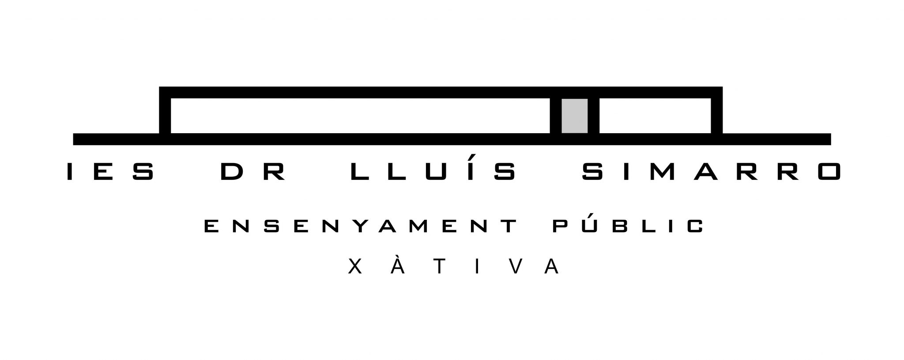

Presentación

En este espacio se presentan algunos apuntes del módulo de Sistemas de Gestión Empresarial para el ciclo de Desarrollo de Aplicaciones Multiplataforma que se imparte en el I.E.S. Lluis Simarro de Xàtiva.
- Elaboración: Alberto Aparicio Vila

Dpto. Informática
I.E.S. Dr. Lluís Simarro Lacabra
Xàtiva